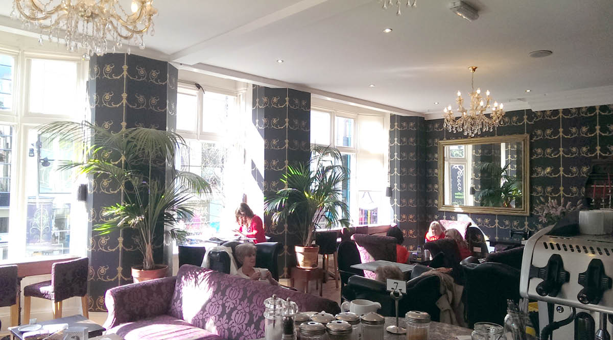
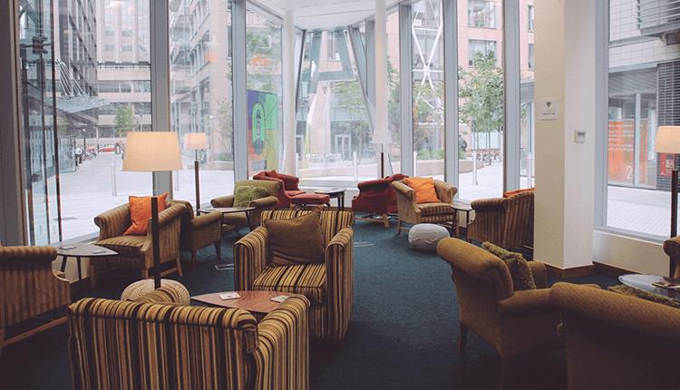
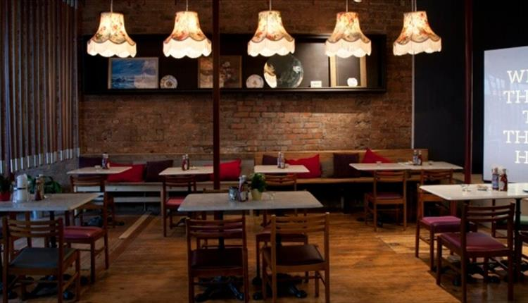

Whether it’s for a quick coffee, indulgent cake or light lunch, here are our following tips for soaking up café culture in Liverpool city region. Our suggestions of cafes includes Leaf on Bold Street, Ziferblat St Paul's Square and Rococo.